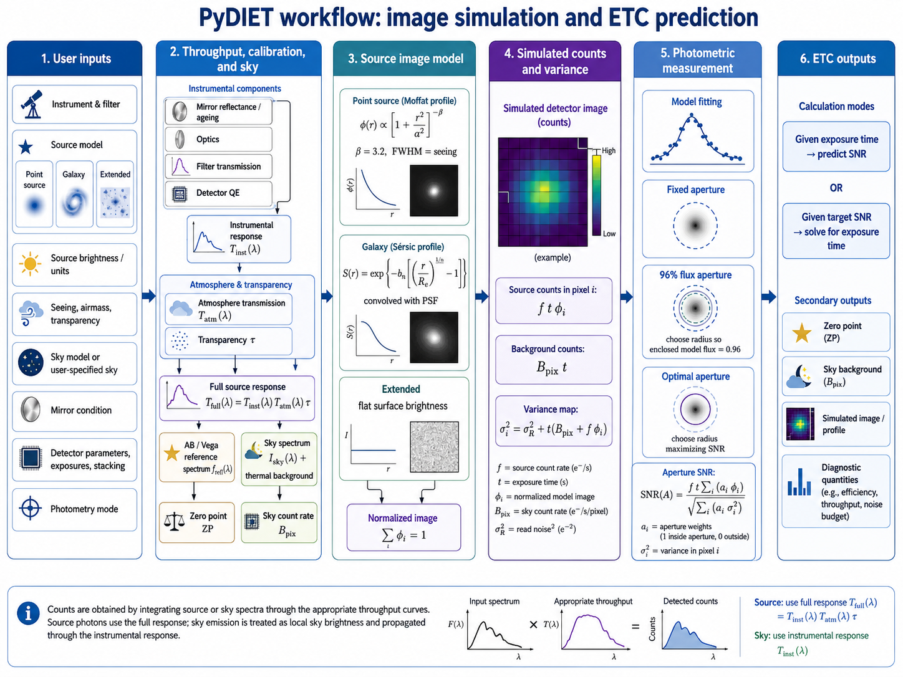

Methods
PyDIET is a simulation-based ETC, and uses different computational models to reproduce the observations (Fig. 3). This section describes the main methods and quantities involved in the process.

Fig. 3 Schematic view of the PyDIET simulation workflow.
Signal-to-Noise ratio
The Signal-to-noise ratio, or simply SNR, is defined in PyDIET as the ratio between the source "flux" \(F\) (actually the number of source photons collected in the detector during the observation) and its expected uncertainty \(\sqrt{\var{F}}\):
\(F=f.t\) is readily computed using the expected number of photons per unit of time \(f\) and the exposure time \(t\). The expected uncertainty \(\sqrt{\var{F}}\) depends on the quality of the estimator of the source flux. Note that the estimator (1) is biased, although this can reasonably be ignored in the context of an ETC for usable SNRs \(\gtrsim 3\).
Model fitting
Assuming that photon noise follows Poisson statistics, that readout noise is Gaussian-distributed, and that noise is independent from pixel to pixel, source model-fitting using inverse-variance-weighted least-squares regression provides a good approximation to the Maximum Likelihood Estimator (MLE) of the "flux" \(F\). In practice there are other contributors to flux uncertainties, such as background estimation errors or contamination by neighboring objects, but they are not easy to quantify, and we shall ignore them in the context of this exposure time calculator.
Forced photometry
Let's start assuming we know the position of the source; hence the only fitted parameter is its amplitude, represented by the "flux" \(F\). Let \(\vec{\phi}\) be the source image model (the PSF for point sources, or the PSF convolved with a light distribution model for extended sources), normalized such that \(\sum_i \phi_i = 1\). The expected source contribution in pixel \(i\) is then \(F\phi_i\).
Before background subtraction, the pixel value may be written as
where
is the contribution from photons,
the readout noise, and
the expected background contribution. After subtracting the expected background, \(I_i = Y_i - B_i\), we have
and
The exact likelihood of \(Y_i\) is the convolution of a Poisson distribution with a Gaussian readout noise distribution. Its Cramér-Rao bound has no simple closed form in general. For the purpose of this ETC, we use an inverse-variance-weighted Gaussian approximation to the exact Poisson+Gaussian likelihood. The inverse-variance-weighted estimating equation is obtained by minimizing
where \(V_i(F)\) is the expected variance used to weight the residuals. The flux is therefore estimated by nulling
If the weights are kept fixed during one least-squares step, this gives the usual inverse-variance-weighted flux estimator [1]:
In practice \(V_i\) may be updated iteratively using the current value of \(F\).
At the true value of \(F\),
so \(\esp{U(F)} = 0\). The Fisher information associated with this optimal high-count approximation is
Hence
For \(\sigma_r = 0\), this expression coincides with the exact Fisher information of the Poisson distribution. With non-zero readout noise, it is the usual Poisson+Gaussian approximation. The Cramér-Rao bound gives
Therefore, plugging into (1) we obtain the upper bound at given exposure time \(t\):
\(\var{\hat{F}}\) approaches the Cramér-Rao bound at sufficiently large SNR or in the background-dominated Gaussian regime. At very low SNR, especially if the flux is constrained to be non-negative or if the source position is fitted simultaneously (see below), the actual uncertainty distribution may be asymmetric or biased, and (15) should be regarded as an optimistic lower bound rather than as a close estimation. Remember also that it does not take into account systematic uncertainty terms such as imperfect background subtraction, correlated noise, model mismatch, source blending, or flat-field errors.
Free model coordinates
If the source coordinates are also left as free parameters, the relevant bound is no longer the reciprocal of the flux-only Fisher information. Instead, one must use the inverse of the Fisher matrix \(\boldsymbol{\cal I}\) for \(\vec{\theta} = (F,x_0,y_0)\): in the same approximation,
where
and
The bound on the flux variance is then
Equivalently, writing
and
one obtains
The correction term is positive, so fitting the position can only degrade the flux uncertainty. For an isolated source with a centrally symmetric model (and a symmetric fitting domain), the flux-position cross-terms vanish by symmetry: \({\cal I}_{Fx} = {\cal I}_{Fy} = 0\). In that ideal case,
and the flux SNR bound reduces to (15). In real data, departures from symmetry, masking, undersampling, neighboring sources, or spatially varying noise can make the cross-terms non-zero, in which case fitting the position increases the bound on \(\var{\hat{F}}\).
Aperture photometry
Aperture photometry is another way of estimating the source flux. It is suboptimal compared to model-fitting. However, it is much less compute-intensive and does not require a model. This is a useful feature, as the model-fitting accuracy of bright, unsaturated stars, may sometimes be limited by that of the PSF model. For sources with unknown light profiles, aperture photometry is generally the safest option.
For an aperture \({\cal A}\), the SNR is
Optimal aperture
The optimal-aperture option chooses the radius \(r=r_\mathrm{opt}\) of the circular aperture \({\cal A}(r)\) that maximizes the expected aperture signal-to-noise ratio \(\mathrm{SNR}({\cal A})\) in (26):
The minimization is performed numerically over the allowed range of aperture radii, from zero to the radius of the circular simulation mask.
The optimal aperture depends on the exposure time and noise regime. PyDIET therefore recomputes the optimal aperture every time the signal-to-noise ratio is evaluated.
For stars, the optimal aperture depends on the seeing, sky background, source brightness, and exposure time. For galaxies, the same calculation is applied to the seeing-convolved Sérsic model (see Galaxy model). The optimal aperture depends on the Sérsic radius, Sérsic index, seeing, sky background, source brightness, and exposure time.
Aperture enclosing 96% of the flux
The large-aperture option is defined as the circular aperture enclosing 96% of the model source flux.
PyDIET computes the enclosed model-flux fraction
where \(r_i\) is the distance of pixel \(i\) from the source center on the internal raster grid.
The aperture radius is obtained by solving
In the PyDIET implementation, \(f096\) is solved numerically with a Brent root finder. The search interval extends from the center of the image to the edge of the circular simulation mask.
The 96% aperture is close to a total-flux aperture. It captures most of the model flux, but it is not generally the aperture with the highest signal-to-noise ratio, because the outer parts of the aperture may contain more noise than useful source signal. In background-dominated conditions, the 96% flux aperture is usually larger than the optimal aperture. The outer wings of the source profile contain little signal but contribute sky noise, so including them lowers the signal-to-noise ratio. In source-dominated or very high signal-to-noise regimes, it may become smaller, because the penalty for including more of the source profile is reduced.
Exposure time
The main purpose of an ETC is obviously to provide exposure times. PyDIET computes the exposure time for a given SNR using iterative root finding applied to (15) or (26), more specifically, Brent's method [2].
Source models
PyDIET currently implements three source models: point sources, galaxies, and flat extended sources. The role of the source model is to define the expected spatial distribution of source photons over the detector pixels.
For compact and galaxy-like sources, the source model is represented by a discrete image \(\phi_i\), normalized as
where \(i\) runs over image pixels (or oversampled sub-pixels, depending on image sampling). If the total detected source rate is \(f\), in photons per second, the expected source contribution in pixel \(i\) during an exposure time \(t\) is therefore
For flat extended sources, the model is instead expressed as a surface brightness: the source rate is then interpreted per unit angular area rather than as the total rate of a finite object.
Point-source model
A point source is modeled as an unresolved object observed through the PSF. PyDIET uses a circular Moffat profile [3],
where \(r\) is the angular distance from the source centre, \(\alpha\) the Moffat scale radius, and \(\beta\) the strength of the wings. The Moffat scale radius is set by the requested FWHM. Since \(M(\mathrm{FWHM}/2) = M(0)/2\), one obtains
PyDIET considers the Moffat \(\beta\) parameter as an instrumental feature; it is set in the instrument section of the data configuration file. The default value is \(\beta = 3.2\), corresponding to the best-fitting value for MegaCam observations.
The Moffat model is rasterized on the internal image grid, truncated inside the circular simulation domain, and normalized numerically:
giving the final rasterized point-source image model.
Galaxy model
A galaxy is modeled as a circular Sérsic profile [4, 5, 6] convolved with the seeing PSF. Before convolution, the intrinsic surface-brightness profile is
where \(R_\mathrm{e}\) is the effective radius and \(n\) the Sérsic index.
The effective radius \(R_\mathrm{e}\) is the radius enclosing half of the intrinsic Sérsic-model flux. The Sérsic index controls the concentration of the profile. Values close to \(n=1\) correspond to disk-like profiles, whereas larger values produce more centrally concentrated profiles with more extended wings, such as in ellipticals or galaxy bulges. For numerical stability reasons, the current implementation enforces limits on the Sérsic index: \(0.36 \leq n \leq 10\).
The observed galaxy model is obtained by convolving the intrinsic Sérsic profile with the PSF model,
where \(*\) denotes convolution. The convolution is performed on the rasterized model using Fourier transforms.
The final galaxy image model is then truncated inside the circular simulation domain and normalized numerically:
The total source rate \(f\) is therefore the total detected photon rate of the galaxy.
Flat extended-source model
The extended-source model represents a flat source with constant surface brightness. It is not normalized to unit total flux, because the source is not treated as a finite object. Instead, the input brightness is interpreted per unit angular area.
Let \(a_i\) be the angular area of pixel \(i\), in arcsec2. For a flat source with detected surface photon rate \(f_\Omega\), in photons s-1 arcsec-2, the expected source contribution in pixel \(i\) during an exposure time \(t\) is
For a regular detector grid, all pixels have the same angular area \(a_\mathrm{pix}\). The model image is therefore simply rasterized as
inside a large disk, and zero outside it. Convolving a constant surface-brightness field by a normalized PSF gives the same constant surface brightness. Therefore, the seeing parameter has no direct effect on the mathematical model of an extended (flat) source.
Synthetic photometry
PyDIET converts source brightnesses and sky surface brightnesses into detected count rates before evaluating the signal-to-noise ratio. This conversion is performed by integrating reference spectra or sky spectra through the selected instrumental and atmospheric responses.
Transmission
Let \(T_\mathrm{inst}(\lambda)\) be the instrumental response, including the selected mirror state, telescope/instrument optics, filter transmission, and detector response. Let \(T_\mathrm{atm}(\lambda; X)\) be the atmospheric transmission at airmass \(X\), and let \(\tau\) be the additional transparency factor entered by the user. The full source transmission used for source count rates is
The effective collecting area is
where \(A_\mathrm{tel}\) is the telescope collecting area and \(A_\mathrm{obs}\) is the obstructed area, which is often instrument-dependent (especially for prime-focus cameras).
Magnitude zero-point
For a given filter and instrument configuration, PyDIET computes a photometric zero-point from the count rate of a reference source.
For AB magnitudes, the reference spectrum is the constant-flux-density \(m_\mathrm{AB}=0\) spectrum. For Vega magnitudes, the reference spectrum is the Vega spectrum. In both cases, the reference count rate is computed by integrating the reference spectrum through the relevant transmission curve.
For the full atmospheric response, the reference count rate is
where \(R_{0,\lambda}\) is the chosen reference spectrum.
PyDIET uses the countrate() method of the SynPhot observation module to evaluate this integral.
If the detector gain is \(g\), in electrons per ADU, the corresponding count rate in ADU per second is
The magnitude zero-point is then
Equivalently, a source producing a measured count rate \(C\), in ADU per second, has magnitude
PyDIET reports two related zero-points:
The full AB zero-point, including atmosphere and transparency. This is the zero-point corresponding to \(T_\mathrm{full}\).
The instrumental AB zero-point (accessible through the web API), computed from \(T_\mathrm{inst}\) only, without atmospheric transmission. This value is cached for each mirror/filter configuration and is used in particular to express the sky background as an AB surface brightness.
For a source magnitude \(m\), the detected source count rate is
For flux-density units, PyDIET converts the input value to the equivalent multiplicative factor relative to the AB reference spectrum. For integrated physical fluxes, the conversion uses the pivot wavelength and equivalent rectangular bandwidth of the full transmission curve.
Sky background
The sky background enters the SNR model as a count rate per detector pixel. PyDIET supports two cases:
a predefined sky model selected from tabulated sky spectra;
a user-specified sky brightness.
For the predefined sky modes, PyDIET selects a tabulated sky-emission spectrum according to:
the sky state, for example dark, grey, or bright;
the solar-activity level;
the observing airmass.
The sky spectrum is interpolated linearly between the available tabulated airmass values. The result is a sky surface-brightness spectrum,
where \(X\) is the airmass, \(s\) the sky state, and \(q\) the solar-activity state.
This sky-emission spectrum is already a surface brightness at the observing site. It is therefore propagated only through the instrumental response, leaving out the transmission of the atmosphere. The sky count rate per square arcsecond is
The term \(B_\mathrm{therm}\) is the instrumental thermal-emission contribution for the selected mirror and filter configuration. It includes thermal emission terms associated with the telescope, optics, filter, and detector model.
When the sky background is specified manually, PyDIET converts the user input into a detector count rate per pixel.
PyDIET reports the sky background both as a count rate per pixel (accessible through the web API) and as an AB surface brightness.
If the detector pixel scale is \(p_x \times p_y\), in arcseconds per pixel, the value passed to the image model as the background rate per pixel is then
The reported AB sky surface brightness is derived from the instrumental AB zero-point:
The instrumental zero-point is used here because the sky-emission spectrum is already the sky brightness at the observing site; it should not be attenuated by the atmosphere a second time.